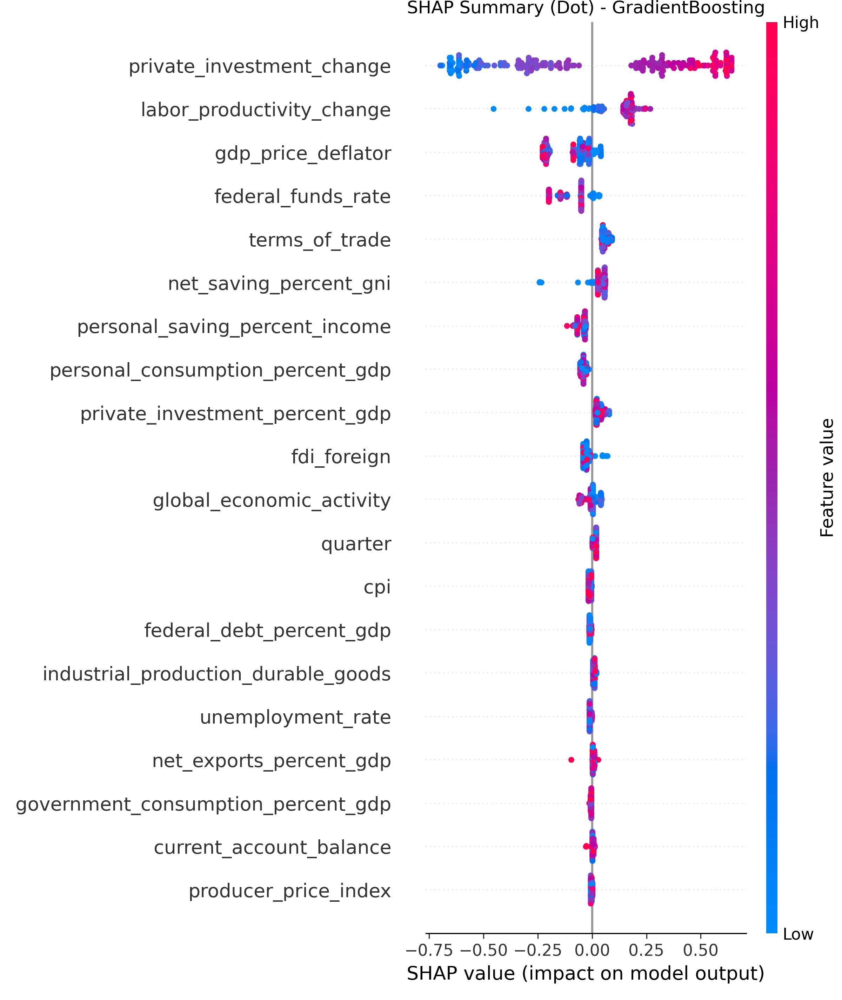
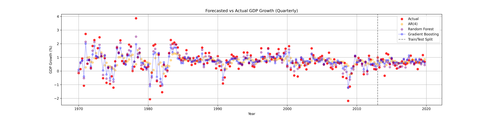

Forecasting U.S. GDP Growth: Machine Learning vs AR Models
Comparative analysis of Random Forest, Gradient Boosting, and AR(4) models using FRED macroeconomic data.
Introduction
This project analyzes the predictive power of machine learning models for forecasting quarterly U.S. GDP growth, benchmarking them against the traditional Autoregressive (AR(4)) model. It examines the impact of key economic indicators covering the period 1970Q1–2020Q1.
- Target Variable U.S. GDP Growth (Quarterly)
- Data Source FRED (Federal Reserve Economic Data)
- Timeline 1970Q1 – 2020Q1
- Models Gradient Boosting, Random Forest, AR(4)
Data & Feature Selection
The dataset includes 21 economic indicators (inflation, private investment, unemployment rate, current account balance, etc.). Feature importance was ranked using Random Forest and Gradient Boosting, while PCA was used to analyze dimensionality.

Feature Importance Rankings


Model Performance & Benchmarking
We trained models on data from 1970–2012 and tested on the 2013–2020 period using Mean Squared Error (MSE) as the evaluation metric.
Gradient Boosting
Random Forest
AR(4) Baseline
Model Interpretation (SHAP Analysis)
SHAP (SHapley Additive exPlanations) values were used to interpret the black-box models. Top drivers for growth identified were private investment, labor productivity, and inflation.


Forecasting & Visualizations


Limitations & Future Work
- Accuracy is moderate; financial time-series are inherently noisy.
- Integration of geopolitical or high-frequency trade data could improve results.
- Deep Learning (LSTM/GRU) methods are worth exploring for temporal dependencies.
Conclusion
Machine learning models (RF, GB) significantly outperform the traditional AR(4) model in forecasting GDP growth. Gradient Boosting delivered the best accuracy, successfully capturing non-linear dynamics that linear autoregressive models miss.